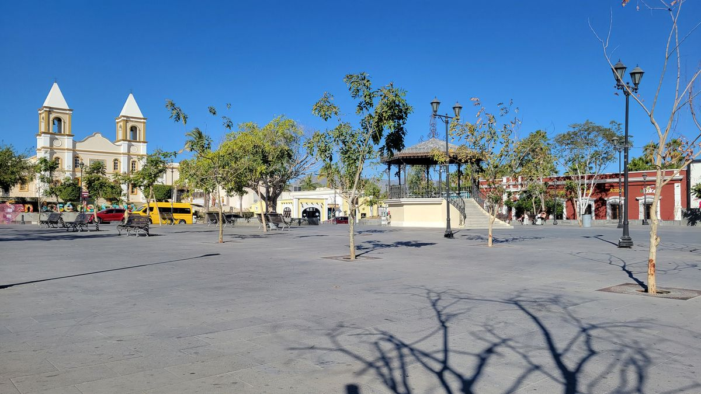
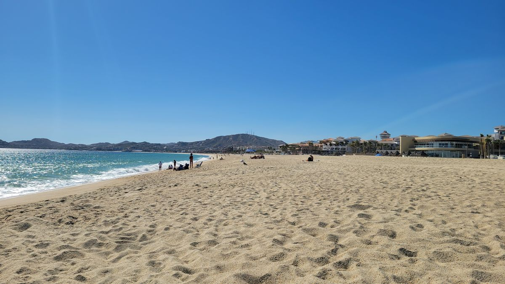
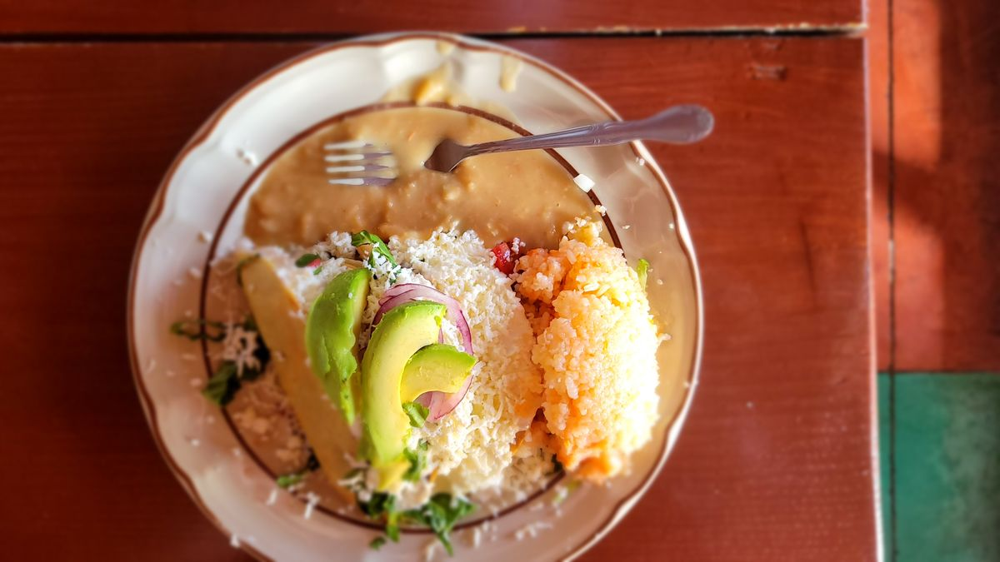

Los Cabos
San Jose del Cabo is the quieter of the “Los Cabos.” At least, that’s what I was told. Looking down on the street from my 2nd Floor Hostel you wouldn’t know that tonight. I arrived on a Thursday, and Thursdays are the local Art Walk night in San Jose del Cabo. The streets are filled with locals and tourists alike admiring the work of locals artists and dining in the dozens of restaurants located along the surrounding cobblestone streets. Other days of the week, galleries are open to peruse featuring magnificent painting and sculptures, available for sale, to those with more money than I.



After over 2 weeks on the road already, I chose to stay in San Jose del Cabo for 5 days, not just a nice and relaxing place to break for a while, but because the ferry from Baja to the Mainland of Mexico does not operate daily and I could stay 3 days or 5 day. I choose 5 to experience an entire weekend in San Jose. San Jose eventually did deliver on the more subdued experience on subsequent nights and I was able to pass my time enjoying the local galleries and restaurants. Daytimes would often be spent at the beach along the hotel Zone. The local Hostal staff (shout out to desert Heart Hostel) even recommended checking out the local municipal market located near, but out of sight of the Centro which offered an area of local cooks to serve their offerings at prices half of what a restaurant would offer further in the town. This will be something to check out in more cities while here in México.

I did also venture into the more famous Cabo San Lucas using the local bus system. Its located about an hour away and if your idea of a great vacation is a Las Vegas that smells like fish, then CSL is the place to be! And I’ll leave that alone.
I learned from a girl from Michoacán, another state in México, at my hostel that Baja is indeed one of the most expensive places in México. When comparing the prices of local Tacos, which is a great indicator of Purchasing Power Parity between different locales in México, she told me Tacos in her home town with be about $15MXP (~$0.90 USD) compared to Bajas average of $30MXP. My already scant budget was being tested and I was ready to move onto more budget friendly locales.